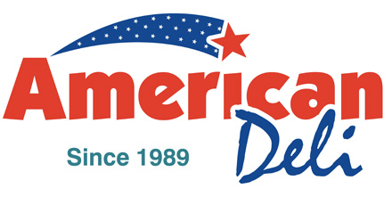

American Deli is a fast food chain that specializes in a vareity of different meals but prominently known for their crispy and savory wing selections. Using the freshest ingredients delivered every two day period, American Deli commits to serving only the best and satisfying meals. As it is a deli, American Deli doesn't only stop at their wing specialty, they are famous for their sandwich selection as well.
The Philly Cheesesteak is a growing popular item at American Deli, especially the Philly/Wing combo. The Philly can be served with a choice of either steak, chicken, or a combination of both. It is served with a mix of vegetables including onions, green bell peppers, and mushrooms, served under a melted duo of white American cheese. Like all the meals offered, the Philly combo is served with a side of french fries and a drink.
The fried rice is a specialty item prepared by a wok and the special house sauce. It can be served with your a choice of protein including chicken, shrimp, beef, and mixed vegetables. Compared to other fried rice served on a hot stove top, the wok style fried rice blends the taste of the traditional oriental char with a rather American cuisine. The fried rice can be served in a multitude of serving sizes. It can be served with your choice of 5 wings or 10 wings or as a large size. The house specialty fried rice is also offered, which includes every protein of chicken, shrimp, and beef in one.
| Wings | Phillies | Fried Rice |
|---|---|---|
| 472 | 302 | 201 |
Above is a table regarding the average frequency of weekly orders at the Athens American Deli location.